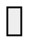
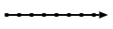
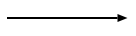
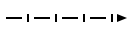
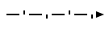
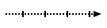

Sc-element types
Warning
This documentation is correct for only versions of sc-machine that >= 0.9.0.
| Graphical (SCg) | C | C++ | SCs | 10-based NS | 16-based NS |
|---|---|---|---|---|---|
| sc_type_node | ScType::Node | sc_node | 1 | 0x1 | |
| sc_type_const | ScType::Const | 32 | 0x20 | ||
| sc_type_var | ScType::Var | 64 | 0x40 | ||
| sc_type_node | sc_type_const | ScType::NodeConst | 33 | 0x21 | ||
 |
sc_type_node | sc_type_var | ScType::NodeVar | 65 | 0x41 | |
| sc_type_node | sc_type_node_tuple | ScType::NodeTuple | sc_node_tuple | 129 | 0x81 | |
 |
sc_type_node | sc_type_const | sc_type_node_tuple | ScType::NodeConstTuple | sc_node_tuple sc_node_not_binary_tuple |
161 | 0xA1 |
 |
sc_type_node | sc_type_var | sc_type_node_tuple | ScType::NodeVarTuple | 193 | 0xC1 | |
| sc_type_node | sc_type_node_struct | ScType::NodeStruct | sc_node_struct | 257 | 0x101 | |
 |
sc_type_node | sc_type_const | sc_type_node_struct | ScType::NodeConstStruct | sc_node_struct | 289 | 0x121 |
 |
sc_type_node | sc_type_var | sc_type_node_struct | ScType::NodeVarStruct | 321 | 0x141 | |
| sc_type_node | sc_type_node_role | ScType::NodeRole | sc_node_role_relation | 513 | 0x201 | |
 |
sc_type_node | sc_type_const | sc_type_node_role | ScType::NodeConstRole | sc_node_role_relation | 545 | 0x221 |
| sc_type_node | sc_type_var | sc_type_node_role | ScType::NodeVarRole | 577 | 0x241 | ||
| sc_type_node | sc_type_node_norole | ScType::NodeNorole | sc_node_norole_relation | 1025 | 0x401 | |
 |
sc_type_node | sc_type_const | sc_type_node_norole | ScType::NodeConstNorole | sc_node_norole_relation | 1057 | 0x421 |
 |
sc_type_node | sc_type_var | sc_type_node_norole | ScType::NodeVarNorole | 1089 | 0x441 | |
| sc_type_node | sc_type_node_class | ScType::NodeClass | sc_node_class | 2049 | 0x801 | |
 |
sc_type_node | sc_type_const | sc_type_node_class | ScType::NodeConstClass | sc_node_class sc_node_not_relation |
2089 | 0x821 |
 |
sc_type_node | sc_type_var | sc_type_node_class | ScType::NodeVarClass | 2113 | 0x841 | |
| sc_type_node | sc_type_node_material | ScType::NodeMaterial | sc_node_material | 8191 | 0x2001 | |
 |
sc_type_node | sc_type_const | sc_type_node_material | ScType::NodeConstMaterial | sc_node_material | 8225 | 0x2021 |
| sc_type_node | sc_type_var | sc_type_node_material | ScType::NodeVarMaterial | 8257 | 0x2041 | ||
|  | sc_type_link_const | ScType::Link | sc_link | 34 | 0x22 |
| sc_type_link_var | ScType::LinkVar | sc_link_var | 66 | 0x42 | |
 |
sc_type_edge_common | ScType::EdgeUCommon | sc_edge sc_edge_ucommon <> |
4 | 0x04 |
| sc_type_arc_common | ScType::EdgeDCommon | sc_arc_common sc_edge_common < > |
8 | 0x08 | |
 |
sc_type_edge_common | sc_type_const | ScType::EdgeUCommonConst | <=> | 36 | 0x24 |
| sc_type_edge_common | sc_type_var | ScType::EdgeUCommonVar | _<=> | 68 | 0x44 | |
 |
sc_type_arc_common | sc_type_const | ScType::EdgeDCommonConst | => <= |
40 | 0x28 |
 |
sc_type_arc_common | sc_type_var | ScType::EdgeDCommonVar | _<= <=_ _=> |
72 | 0x48 |
|  | sc_type_arc_access | ScType::EdgeAccess | sc_arc_access sc_edge_access ..> <.. |
16 | 0x10 |
|  | sc_type_arc_access | sc_type_const | sc_type_arc_pos | sc_type_arc_perm | ScType::EdgeAccessConstPosPerm | sc_arc_main sc_edge_main <- -> |
2224 | 0x8B0 |
| sc_type_arc_access | sc_type_var | sc_type_arc_pos | sc_type_arc_perm | ScType::EdgeAccessVarPosPerm | _<- _-> <-_ |
2256 | 0x8D0 | |
 |
sc_type_arc_access | sc_type_const | sc_type_arc_neg | sc_type_arc_perm | ScType::EdgeAccessConstNegPerm | <|- -|> |
2352 | 0x930 |
|  | sc_type_arc_access | sc_type_var | sc_type_arc_neg | sc_type_arc_perm | ScType::EdgeAccessVarNegPerm | _<|- _-|> <|-_ |
2384 | 0x950 |
| sc_type_arc_access | sc_type_const | sc_type_arc_fuz | sc_type_arc_perm | ScType::EdgeAccessConstFuzPerm | </- -/> |
2608 | 0xA30 | |
|  | sc_type_arc_access | sc_type_var | sc_type_arc_fuz | sc_type_arc_perm | ScType::EdgeAccessVarFuzPerm | _</- _-/> </-_ |
2640 | 0xA50 |
 |
sc_type_arc_access | sc_type_const | sc_type_arc_pos | sc_type_arc_temp | ScType::EdgeAccessConstPosTemp | <~ ~> |
1200 | 0x4B0 |
 |
sc_type_arc_access | sc_type_var | sc_type_arc_pos | sc_type_arc_temp | ScType::EdgeAccessVarPosPerm | _<~ _~> <~_ |
1232 | 0x4D0 |
|  | sc_type_arc_access | sc_type_const | sc_type_arc_neg | sc_type_arc_temp | ScType::EdgeAccessConstNegTemp | <|~ ~|> |
1328 | 0x530 |
 |
sc_type_arc_access | sc_type_var | sc_type_arc_neg | sc_type_arc_temp | ScType::EdgeAccessVarNegPerm | _<|~ _~|> <|~_ |
1360 | 0x550 |
 |
sc_type_arc_access | sc_type_const | sc_type_arc_fuz | sc_type_arc_temp | ScType::EdgeAccessConstFuzTemp | </~ ~/> |
1584 | 0x630 |
| sc_type_arc_access | sc_type_var | sc_type_arc_fuz | sc_type_arc_temp | ScType::EdgeAccessVarFuzPerm | _</~ _~/> </~_ |
1616 | 0x650 |